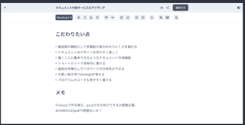
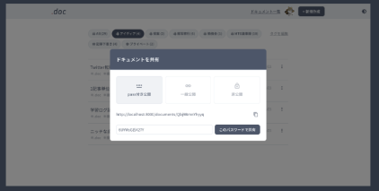
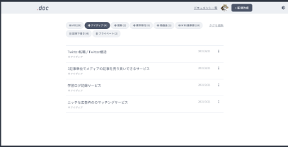

快適さへのこだわり
シンプルな機能
多機能ではない分、わかりやすく・使いやすい機能。書くこと、教諭することのみに特化。
きれいなドキュメント
見やすいドキュメント、見やすい管理画面。
シンプルでわかりやすいデザイン。
書きやすいエディター
ドキュメント作成画面の装飾はショートカットを用意。なれればサクサク。
.docの機能

ドキュメント作成
装飾はボタンをワンクリック、もしくはショートカットキーで、綺麗に作成可能。

webページとして共有可能
パスワード付き共有/一般公開(URLを知っていれば閲覧可能)/非公開の３つを用意。

タグでドキュメントを管理
ドキュメントはタグ付けすることで、分類が可能。もちろん追加削除/複数指定も可能。